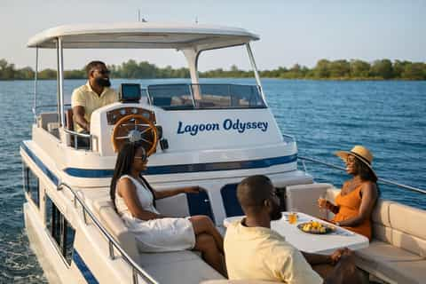

Rapids Adventure Rafting was founded in 2010 by a group of experienced river guides who shared a passion for outdoor adventure and environmental stewardship. What started as a small local business has grown into one of the region's most trusted rafting companies.

Today, we proudly guide thousands of visitors each year through breathtaking rivers and exciting rapids. Our experienced guides, commitment to safety, and dedication to exceptional customer service ensure that every trip becomes an unforgettable adventure.